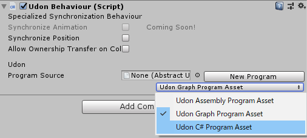
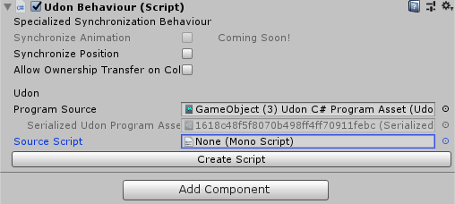
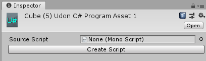
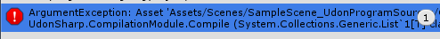

UDONメモ
UdonGraphはクソ
UdonSharp
最高。C#と同じ構文でUdonを記述できる。
https://github.com/Merlin-san/UdonSharp
インストール
上記サイトからUnitypackageをダウンロードし、VRChatSDK3をインポートしてからインポート。
スクリプトの作成
UdonBehaviourコンポーネントを付けて、プルダウンから Udon C# Program Asset を選択する。

そして New Program でProgram Sourceを作成。Create Scriptでスクリプトファイルを作成する。

あとはコーディング！
用語定義
ちょくちょく混同するのでここで定義します。
Master（マスター）
VRChat技術メモ帳ではInstance内にいる中で、ローディングが終了した順番が一番早い人。Instanceを出ると次に早い人に移行するとのこと。 Udon環境ではPlayerIDが取れるようになったため、ワールド内でPlayerIDが一番若い人がMasterという認識で多分間違っていない。
InstanceOwner（インスタンスオーナー）
Instanceを立てた人のこと（VRChat技術メモ帳では単にオーナーという）。FriendなどのInstanceの公開範囲に関わる。
OwnerShip（オーナーシップ）
オブジェクト一つ一つに設定されている、オブジェクトの同期を行う権限のこと。
ObjectOwner（オブジェクトオーナー）
OwnerShipを持っているプレイヤーについての用語がInstanceを立てた人のことであるOwnerと混同しやすいため、このサイトでは「そのオブジェクトのOwnerShipを持っているプレイヤー」のことをObjectOwnerと呼ぶことにする。（筆者の造語なので注意。 正しい言い方があったらTwitterで教えて・・・ （2020/04/09追記 Object Ownerと名付けました。））
同期変数
UdonSharpでは以下のように、UdonSynced属性がついた変数のことをいう。
1 2 | [UdonSynced(UdonSyncMode.None)] public float syncFloatValue = 0.0f; |
インタラクト
IntaractはどうやらUdonBehaviourがついている物自体にコライダーがついてないと入っていない？
インタラクト時に呼ばれるコールバック関数はこのように定義する。
1 2 3 | public override void Interact() { } |
インタラクト時のヒント表示を変更する
InspectorをDebug表示にするとUdonBehaviourでInteract Textから変更できる。
現状、UDONのInteractするときのTextはDebugモードから変更できそう pic.twitter.com/TrxJFzOyoD
— ureishi (@aivrc) April 5, 2020
SetOwner
インタラクトした人にOwnerShipを渡す関数。 ただし反映されるのは次のインタラクション時。（近日中に修正されることが予定されている。）
1 2 3 4 | public override void Interact() { Networking.SetOwner(Networking.LocalPlayer, gameObject); } |
Networking
GetOwner
そのオブジェクトのObjectOwnerの名前が取れる。
1 | Networking.GetOwner(gameObject).displayName |
VRCPlayerApi
GetPlayerById
IDからプレイヤーを取得する。そのIDのプレイヤーがいない場合nullを返す。
1 | var p = VRCPlayerApi.GetPlayerById(i); |
OnOwnershipTransferred()
OwnerShipを失う時に、失った人で発火する。 失った時に発火するため、同期された値を編集することは出来ない。
VRCPlayerAPI同士の比較
Networking.GetOwnerなどで取れるVRCPlayerAPIは比較演算子を使ってNetworking.LocalPlayerと比較は出来なかった。
こっちはダメ
1 | Networking.LocalPlayer == Networking.GetOwner(playerList.gameObject); |
こっちはOK
1 | Networking.IsOwner(Networking.LocalPlayer, gameObject); |
OnPlayerJoinやOnPlayerLeftの引数のplayerはNetworking.LocalPlayerと比較演算子（==）を使用しても正しく比較できるが、きちんと比較したい場合はplayerIDで比較するのがよいかもしれない。
PlayerIDの決定規則
プレイヤーIDは最初に入った人を1として、どんどん数字が増えていく
1 : user1
2 : user2
3 : user3
ここでuser2が抜けて、そのあとuser4が入ってきた場合は2が欠番となり、user4のplayerIDは4になる。
1 : user1
3 : user3
4 : user4
また、ここでuser2が戻ってきた場合はplayerIDは5になる
1 : user1
3 : user3
4 : user4
5 : user2
OnDeserialization(未検証)
ObjectOwnerから synced variableの更新値が届いた時に発生する OnPreSerializationはObjectOwnerで送り出す前に発生するのが OnPreSerialization
同期回りを突っついている人が多そうなので：
— naqtn(なくとん) (@naqtn) April 6, 2020
OnDeserialization はマスターから synced variable の更新値が届いた時に発生します。ただし、どの変数が変わったのかは分かりません。対となる、マスター側で送り出す前に発生するのが OnPreSerialization です。
同期周りで陥りがちな問題・バグ
OnPlayerLeft時に同期変数が更新されない
OnPlayerLeftのタイミングで以下のように同期変数を修正する場合、このオブジェクトのObjectOwnerがワールドから移動する場合は値が更新されない。
1 2 3 4 5 6 7 8 9 10 | [UdonSynced(UdonSyncMode.None)] private int syncValue = 0; public override void OnPlayerLeft(VRCPlayerApi player) { if (Networking.IsOwner(Networking.LocalPlayer, gameObject)) { syncValue = 1; } } |
ObjectOwnerが落ちるとそのワールドのMasterにOwnerShipが移動するが、Networking.SetOwnerと同様にOwnerShipの移動にラグがある。
憶測だが、OwnerShip移行時にOpPlayerLeftでIf分内が新しいObjectOwnerで動作するが、全体ではまだ新しいObjectOwnerがObjectOwnerではないため、値の同期は走らないのではないかと思われる。
少なくとも、OwnerShip移動と同期変数の更新は同タイミングで行わないほうがいい。
Synchronize Position がオンだと同期変数が同期しない
同期変数があるプログラムを Synchronize Position をオンにしているUdonBehaviourにセットした場合、ObjectOwner以外のプレイヤーでは同期変数が同期されなくなる。
あと、同期ではまりそうなの： https://t.co/ByrtYT8pKy variable を synced にしているプログラムを Synchronize Position を on にしている UdonBehaviour で動かすと、owner ではない人の所で variable の同期が止まる現象があります。
— naqtn(なくとん) (@naqtn) April 6, 2020
コンパイルが走らないとき
Udon C# Program AssetでSource Scriptがセットされていない物があると以下のようなエラーが出てすべてのファイルのコンパイルが走らなくなる。
シーンで使っていなくても走らなくなるので削除する。


1 2 | ArgumentException: Asset 'Assets/Scenes/SampleScene_UdonProgramSources/Cube (5) Udon C# Program Asset 1.asset' does not have a valid program source to compile from UdonSharp.CompilationModule.Compile (System.Collections.Generic.List`1[T] classDefinitions) (at Assets/UdonSharp/Editor/UdonSharpCompilationModule.cs:46) |
ちなみに、このエラーが出ている状況でも、Force Compile Scriptを押せば単体でコンパイルできる。
Stringを使った同期リスト
現在(2020/04/09)同期変数で配列を使用することが出来ない。また、Listのような可変長の配列データも扱うことが出来ない。
しかし、string型の同期変数を使うことでこれらを疑似的に再現することは可能。
仕組みとしては、カンマ区切りで数列を持ちstring.Splitでそれぞれを分割して処理する。
1 2 | // カンマ区切りの文字列を配列として使う string test = "0,1,2,3,4,5,6"; |
1 2 3 4 5 6 7 8 9 10 11 12 13 14 15 16 17 18 19 20 21 22 23 24 25 26 27 28 29 30 31 32 33 34 35 36 37 38 39 40 41 42 43 44 45 46 47 48 49 50 51 52 53 54 | [UdonSynced(UdonSyncMode.None)] private string ListString = ""; // リストの中身を列挙する public ListUp() { if(ListString.Equals("")) return; string[] strs = ListString.Split(','); for(int i = 0; i < strs.Length; ++i) { Debug.Log(strs[i]); } } // リストに追加する public void Add(string str) { if(!ListString.Equals("")) ListString += ","; ListString += str; } // リストから削除する public bool Remove(string str) { if(ListString.Equals("")) return false; string[] strs = ListString.Split(','); string newList = ""; bool exists = false; for(int i = 0; i < strs.Length; ++i) { if(str.Equals(strs[i])) { exists = true; } else { if(!newList.Equals("")) newList += ","; newList += strs[i]; } } ListString = newList; return exists; } // リストサイズを取得 public int GetListSize() { return ListString.Split(',').Length; } |
stringから整数や浮動小数点数に変換したい場合は以下の関数を使う。
1 2 3 4 5 | string intValue = "5" int num = int.Parse(intValue); string floatValue = "3.4"; float num = float.Parse(floatValue); |
（作例）同期スイッチ
オブジェクトのアクティブ、非アクティブを同期的に切り替えるUdon。 OwnerShipの移行は行わないため、常にインスタンスのMasterがOwnerShipを持つ。 切り替えの変数はMasterが保持するため、Master以外が高速で切り替えると値の更新が遅れて切り替わりがラグくなる時がある。 ただし、状態は間違いなく同期される。 後からワールドに入ってきた場合も同じ状態を保持する。
1 2 3 4 5 6 7 8 9 10 11 12 13 14 15 16 17 18 19 20 21 22 23 24 25 26 27 28 29 30 31 32 33 34 35 36 37 38 39 40 41 42 43 44 45 46 47 48 49 50 51 52 53 54 55 56 57 58 | using UnityEngine; using UdonSharp; using VRC.Udon; using VRC.SDKBase; public class NewBehaviourScript : UdonSharpBehaviour { public GameObject mirror; [UdonSynced(UdonSyncMode.None)] private bool mirrorEnable = false; // Start is called before the first frame update void Start() { mirror.SetActive(mirrorEnable); } public override void OnPlayerJoined(VRCPlayerApi player) { // Joinしたプレイヤーの同期 // 2番目以降に入ってきたプレイヤーはStart()が動かないのでこれで値を同期する。 if(Networking.LocalPlayer == player) { mirror.SetActive(mirrorEnable); } } // Update is called once per frame void Update() { } public override void Interact() { if (!mirrorEnable) { // ユーザー全体にイベントを通知 SendCustomNetworkEvent(VRC.Udon.Common.Interfaces.NetworkEventTarget.All, "SetMirrorActive"); } else { // ユーザー全体にイベントを通知 SendCustomNetworkEvent(VRC.Udon.Common.Interfaces.NetworkEventTarget.All, "SetMirrorInactive"); } } public void SetMirrorActive() { mirror.SetActive(true); mirrorEnable = true; // ココはオーナーのみ動く } public void SetMirrorInactive() { mirror.SetActive(false); mirrorEnable = false; // ココはオーナーのみ動く } } |
変数の同期
UdonSharpで変数の同期設定はアトリビュートでできる。
1 2 | [UdonSynced(UdonSyncMode.None)] public float syncFloatValue = 0.0f; |
SyncモードはUdonSyncModeで変更できる
| モード | |
|---|---|
| UdonSyncMode.NotSynced | 同期しない |
| UdonSyncMode.None | 補間なし |
| UdonSyncMode.Linear | 線形補間 |
| UdonSyncMode.Smooth | スムース補間 |
SendCustomNetworkEvent
ネットワーク越しでイベントを発行するのに使えるメソッド、オーナーシップとの兼ね合いはまだよくわからない。
ここに指定するメソッドはPublicじゃないといけない。
以下のコードでインタラクト時に、ワールドにいる全員に対してイベントを発火し、ExampleMethodを実行する。
1 2 3 4 5 6 7 8 9 | public override void Interact() { SendCustomNetworkEvent(VRC.Udon.Common.Interfaces.NetworkEventTarget.All, "ExampleMethod"); } public void ExampleMethod() { Debug.Log("test"); } |
VRC.Udon.Common.Interfaces.NetworkEventTarget.Ownerにすることで、ObjectOwnerのみに発火させることができる。
この時、インタラクトした人は誰であっても問題ない。AllならObjectOwnerやObjectOwner以外がインタラクトした場合、全員にイベントが発火し、OwnerならObjectOwnerとObjectOwner以外がインタラクトするとObjectOwnerのみExampleMethodが実行される。
SendCustomEvent()
名前が似ているけれど、こちらはだた単純に名前で関数を実行できる関数だった。
（作例）PlayerModに代わるUdon
1 2 3 4 5 6 7 8 9 10 11 12 13 14 15 16 17 18 19 20 21 22 | using UdonSharp; using UnityEngine; using VRC.SDKBase; using VRC.Udon; public class WorldSettings : UdonSharpBehaviour { public float jump; // ジャンプの高さ public float walk; // 歩く速度 public float gravity; // 重力 void Start() { VRCPlayerApi localPlayer = Networking.LocalPlayer; // エディターで動かすとプレイヤーがいないためnullチェックしておく。 if (localPlayer == null) return; localPlayer.SetJumpImpulse(jump); localPlayer.SetWalkSpeed(walk); localPlayer.SetGravityStrength(gravity); } } |
バグ
WheelCollider.GetWorldPose()は使用できない（2020/04/09現在）
WheelCollider.GetWorldPoseは関数としても、Udonのノードとしても存在するが動かない。
WheelCollider.GetWorldPose returns 0
リンク
Udonの同期のVRChat公式の提言
How to Sync with Udon
はつぇさんのU#に関する記事
真時代傾向璋
やぎりさんのメモ
UdonSharp走り書きメモ.cs（執筆中、順次更新）
naqtnさんのツイート